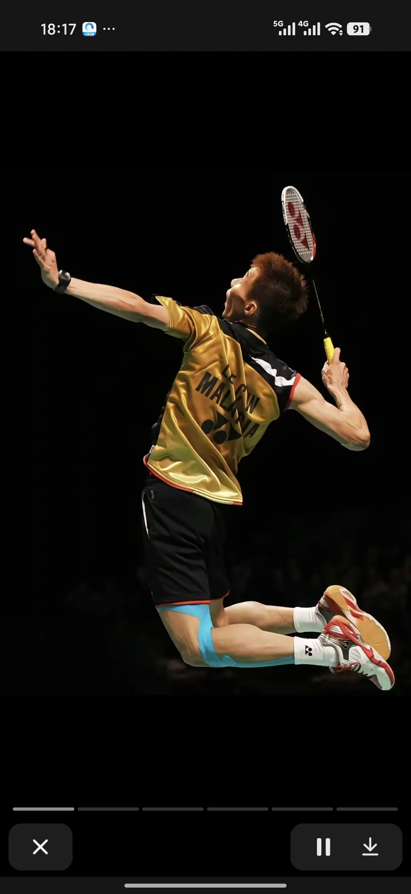
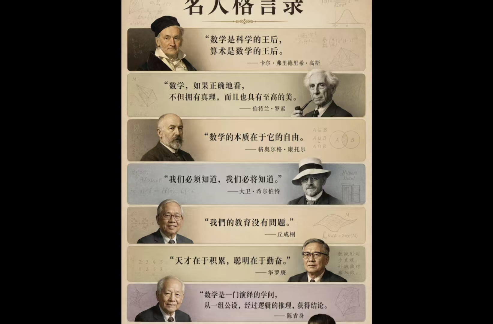

About / Personal Profile
赖征宇
于曲折处跋涉，
于荒芜见繁花。
于荒芜见繁花。
西南交通大学人工智能专业 2026 级本科生。对新事物保持好奇与接纳，喜欢在已有框架之下探索新的可能性，也愿意主动寻找更高效率的工具完成创造性任务。我希望未来能够长期把热爱与汗水投入人工智能领域，把数学、代码、工程能力、AI 工具与创造力真正连接起来。
Profile Snapshot
少量文字，
先把关键信息说清楚。
短信息直接呈现；需要解释的经历继续通过点击展开。
EDUCATION西南交通大学 · 人工智能 · 2026级
CODEPython · C语言 · Web · Vibe Coding
MATH微积分 · 线性代数前置探索
ENGLISH词汇向六级扩展 · 学习过雅思课程
CREATE视频创作 · AI辅助表达 · 互联网资源探索
SPORT长跑 · 羽毛球
Education & Growth
不是一条直线，
而是一条正在延伸的路径。
时间线先显示关键节点；点击节点，再阅读详细想法。
2026.09 — 2030.06 / EXPECTED
西南交通大学 · 人工智能专业
本科。计划系统学习高等数学、线性代数、概率统计、数据结构、机器学习、深度学习等课程，并通过项目建立工程能力。
PRE-UNIVERSITY
数学与英语前置探索
高中阶段开始主动接触微积分、线性代数等内容；英语词汇量逐步向六级方向扩展，并学习过雅思课程。
NOW / CONTINUING
AI 编程、自媒体与 Vibe Coding
学习 Python、C 语言、Web 前端；用 AI 进行代码生成、调试、创作与效率工具探索，偏爱 Vibe Coding 这类能提高创造效率的工作方式，同时保持视频与互联网内容创作实践。我的重点不是追逐工具本身，而是探索“框架之下还能发生什么”。
Beyond Code
运动，训练另一种
“持续运行”。
照片先出现，点击照片后再出现对应的句子。

略懂一点 · 持续练习点击照片查看一句话即使失败，也要以最漂亮的姿态挥出下一拍。
略懂一点 · 继续跑下去点击照片查看一句话
当身体撑不住时，意志会带你杀出重围。

点击图片查看我想说的话我将永远砥砺于粗粝的地表，面前是世界闻名的汪洋巨海，头顶的天空是一道磅礴的彩虹。
Contact
保持联系。
微信号点击即可复制；QQ 邮箱与 Gmail 点击即可发邮件。其余原有联系方式继续保留，不删除已有信息。